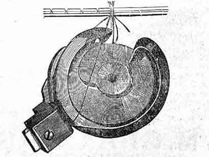

FOR USING
Sharpen Needles by grinding them with the emery wheel, placed on the spindle. Have the cloth-presser raised, the needle unthreaded, and the bobbin removed. Make the point round, long and tapering, not short and blunt.
Use the Thread Hook to get the end of the thread out of the bobbin, or blow it out; never use a pin, needle, or scissors, nor mar the edge of the bobbin.
Never allow the bobbins to get rusty.
Never oil the tension pulley.
Never turn the various screws in the machine except as herein directed.
Ordinary Seams are easily crossed. If very thick, go slowly; and if the work is retarded, push it under the presser, when the needle is out of the goods, so that all the stitches will be of equal length.
Hard and lime dressed goods and stiff brilliants are sewed better after being rubbed with white soap, where the seam is to be, or by using the thread oiler, or after being washed.
When the tension is too tight.
When the needle is not set right, or is too small for the thread.
When the bobbin or hook have been scratched.
The most frequent cause of silk or thread being chafed or frayed off, when the tension is not too tight, is that the needle is too fine.
Skipping Stitches. This may occur when the needle is too high; or when the point is blunted; or with lime dressed goods, which need soaping, or the use of the thread oiler; or if the needle does not pass perfectly true through the needle-hole in the cloth plate.
If the Machine does Not Feed the Cloth, the stitch is too short, or the feed points need cleaning. If the feed motion is worn so that it does not rise the proper height, it may be raised by turning down the left screw on the feed point. It should lift the hemmer off the plate the thickness of a card only.
Heavy Work. To sew heavy work, put in the coarse plate slide and use a coarse needle, and the heavy spring, if necessary. For size of needle and thread see first page. Heavy work needs a tight tension and long stitch.
If the Band Slips, and does not force the needle through the cloth, it needs tightening, which can be done by cutting off a small piece and lacing it again. Cut the end perfectly square.
To Gather. Put No. 24 thread in the bobbin, make a long stitch with a moderately loose tension and gather by drawing the under thread.
If a very elastic bias seam is desired, keep the goods well stretched while sewing.
To Turn a Corner, llet the needle raise half way out of the goods, draw up teh thread, taking hold of it just back of the eyelet, and being careful not to pull any thread from the tension pulley; raise the cloth presser and turn the work, the needle acting as a pivot; let down the cloth presser and proceed. Or, raise teh cloth presser and turn the goods when the point of the needle in going down has just reached the top of the glass.
The Brush Pad is to detain one loop until the point of the hook has entered the next. It should press snugly against the outer edge of the rotating hook, but should not be forced against it sufficiently to divide the bristle, as it will then detain the thread too long, and cause it to break. It should never be moved unless worn away until it does not touch the hook, in which case it may be moved against the hook.
